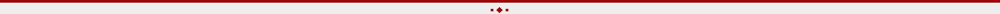

-
O Burndown Chart não é uma invenção dos métodos ágeis, ele é uma ferramenta popular para acompanhamento da diminuição de um recurso ou métrica ao longo do tempo.
No contexto de projetos, um Gráfico de Burndown te mostra a relação de trabalho a ser realizado versus o tempo que você possui para fazê-lo. Ele pode ser tão macro a ponto de englobar todo o ciclo de desenvolvimento de uma release do produto (chamado neste caso de Release Burndown) ou tão micro a ponto de englobar apenas o trabalho de uma pessoa, sendo incomum este uso, mas é possível para metas pessoais.
-
Para sua criação podemos dividir por passos.
- Comece identificando todas as tarefas ou histórias de usuário que fazem parte do seu projeto. Isso deve ser uma lista completa e detalhada do trabalho a ser feito.
- Estime a quantidade de esforço necessário para concluir cada tarefa. Isso pode ser feito usando pontos de história, horas de trabalho ou outra unidade de medida que faça sentido para a sua equipe.
- Defina o período de tempo durante o qual você deseja criar o Burn Down Chart. Isso pode ser em dias, semanas ou sprints, dependendo da duração do seu projeto.
- Desenhe um gráfico com um eixo X representando o tempo e um eixo Y representando o trabalho restante. O eixo X deve ser marcado com unidades de tempo relevantes (por exemplo, dias ou semanas), e o eixo Y deve ser marcado com unidades de trabalho (por exemplo, pontos de história ou horas).
- Para cada ponto de tempo no eixo X, registre a quantidade total de trabalho que deve ser feita (isso é a soma das estimativas de todas as tarefas). Isso será o ponto de partida no gráfico.
- À medida que o projeto avança, atualize o gráfico diariamente. Para cada ponto de tempo, subtraia o trabalho já concluído da quantidade total de trabalho estimada para esse período. Isso lhe dará o trabalho restante.
- Conecte os pontos de trabalho restante no gráfico com uma linha. Essa linha de tendência mostrará se a equipe está no caminho certo para concluir o projeto dentro do prazo. A inclinação da linha pode indicar se a equipe está se movendo mais rápido ou mais devagar do que o planejado.
- Use o Burn Down Chart como uma ferramenta de acompanhamento contínuo do progresso do projeto. Se a linha de tendência estiver abaixo do planejado, a equipe está indo bem. Se estiver acima, a equipe está atrasada.
- Com base nas informações do Burn Down Chart, faça ajustes no plano do projeto, como alocar mais recursos ou reavaliar prioridades, se necessário.
Passo 1: Defina o Escopo do Projeto
Passo 2: Estime o Trabalho
Passo 3: Determine o Período de Tempo
Passo 4: Crie um Eixo X (Tempo) e um Eixo Y (Trabalho Restante)
Passo 5: Registre os Dados
Passo 6: Atualize o Gráfico Diariamente
Passo 7: Trace a Linha de Tendência
Passo 8: Acompanhe o Progresso
Passo 9: Faça Ajustes
